1)
Sejam u e v vetores unitários de
 .
.
Resposta:
a)
Pelas propriedades do produto escalar,
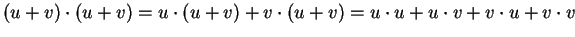.
Como u e v são vetores unitários,
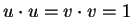.
Lembre também que
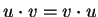.
Logo,
Analogamente,
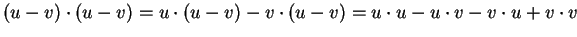.
Como u e v são vetores unitários,
.
Lembre também que
.
Logo,
b)
Pelos cálculos já feitos,
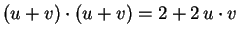e
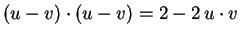.
Logo a igualdade pode ser reescrita como
c)
Observe que
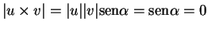,
onde  é o ângulo formado pelos vetores.
Logo
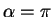
ou
é o ângulo formado pelos vetores.
Logo
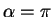
ou  ,
e os vetores são paralelos.
Portanto,
,
e os vetores são paralelos.
Portanto,
 .
.
d)
Pelas propriedades do produto vetorial:
e) 0bserve 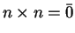, pois 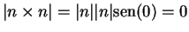. Logo 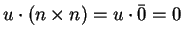.
2) Considere o plano 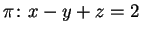.
Resposta:
a)
O vetor normal de  é (1,-1,1). Como
é (1,-1,1). Como
 é paralelo a
é paralelo a  ,
,
 e
e  têm
o mesmo vetor normal, logo é da
forma,
x-y+z=d. Para determinar d usamos que (0,0,0)
pertence ao plano
têm
o mesmo vetor normal, logo é da
forma,
x-y+z=d. Para determinar d usamos que (0,0,0)
pertence ao plano  ,
logo
d=0 e
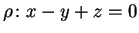.
,
logo
d=0 e
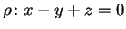.
b)
Para determinar as equações paramétricas de  devemos encontrar
um ponto P de
devemos encontrar
um ponto P de  e dois vetores u e v paralelos a
este plano, isto é,
ortogonais a (1,-1,1), e não paralelos entre si.
e dois vetores u e v paralelos a
este plano, isto é,
ortogonais a (1,-1,1), e não paralelos entre si.
Podemos tomar P=(1,0,1), u=(1,1,0) (verifica 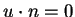) e v=(0,1,1) (verifica 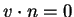).
Uma equação paramétrica é
Observe que existem outras equações paramétricas de  :
o ponto Q=(2,1,1) pertence a
:
o ponto Q=(2,1,1) pertence a  e os vetores (1,2,1) e
(1,7,6) são paralelos a
e os vetores (1,2,1) e
(1,7,6) são paralelos a  (veja que o produto escalar
destes vetores por n é zero).
Logo, outra
equação paramétrica de
(veja que o produto escalar
destes vetores por n é zero).
Logo, outra
equação paramétrica de  é
é
Outra forma de resolver a questão é
escolher x e y como parâmetros (t e s)
e escrever z, em função destes parâmetros:
x-y+z=2, logo t-s+z=2, z=2-t+s,
c)
A distância entre os planos é igual a distância de qualquer ponto
Q (por exemplo a origem) de  a
a  .
Calcularemos esta distância usando dois métodos.
.
Calcularemos esta distância usando dois métodos.
Método 1: Considere o ponto P=(1,0,1) de  .
A distância é o módulo da projeção do
vetor
.
A distância é o módulo da projeção do
vetor
 no vetor normal do plano
no vetor normal do plano  ,
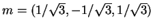.
O vetor projeção é
,
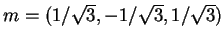.
O vetor projeção é
Método 2:
Calcularemos o ponto T de interseção do plano  e da reta
r perperdicular a
e da reta
r perperdicular a  contendo
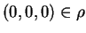.
A distância é comprimento do segmento
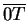.
contendo
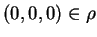.
A distância é comprimento do segmento
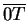.
A reta r é (t,-t,t),
 .
Logo para obter o ponto
de interseção resolvemos,
.
Logo para obter o ponto
de interseção resolvemos,
d)
Para calcular o ponto mais próximo de A=(1,0,1) do plano  consideramos a interseção da reta s perpendicular
a
consideramos a interseção da reta s perpendicular
a  contendo A e o próprio plano
contendo A e o próprio plano  .
A reta s tem equação,
(1+t,-t,1+t),
.
A reta s tem equação,
(1+t,-t,1+t),
 .
O ponto de interseção de s e
.
O ponto de interseção de s e  é obtido resolvendo
é obtido resolvendo
Existe outro método diferente. É suficiente observar
que o vetor projeção de
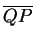
em (1,-1,1) é
(2/3,-2/3,2/3). Portanto, dado qualquer ponto B de  se verifica
que
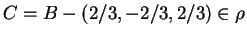
e que C é o ponto
de
se verifica
que
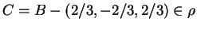
e que C é o ponto
de  mais próximo de B. No nosso caso,
(1,0,1)-(2/3,-2/3,2/3)= (1/3,-2/3,1/3).
mais próximo de B. No nosso caso,
(1,0,1)-(2/3,-2/3,2/3)= (1/3,-2/3,1/3).
e)
Observe que o triângulo com vértices
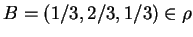,
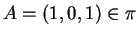
e C
(onde C é qualquer ponto de
 ,
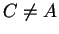)
é um triângulo retângulo:
o vetor
,
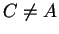)
é um triângulo retângulo:
o vetor
 é paralelo ao vetor normal do plano
é paralelo ao vetor normal do plano  e
o vetor
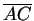
é paralelo a
e
o vetor
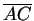
é paralelo a  ,
logo ortogonal a
,
logo ortogonal a
 .
Portanto, escolhemos qualquer ponto de
.
Portanto, escolhemos qualquer ponto de  diferente
de (1,0,1), por exemplo (2,2,2).
diferente
de (1,0,1), por exemplo (2,2,2).
3)
Considere a reta r1 dada como intersecção dos planos
x-z=1 e x-y=1. Seja a reta
 ,
,
 .
.
Resposta:
a) Sejam n=(1,0,-1) e m=(1,-1,0) os vetores normais dos planos que definem r1. O vetor diretor de r1 é 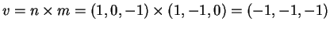. Logo podemos tomar como vetor diretor (1,1,1).
b)
Existem dois métodos. Primeiro é encontrar um ponto de r1,
por exemplo (1,0,0), e a equação é
(1+t,t,t),
 .
.
Outro método é resolver o sistema.
Temos z=x-1 e y=x-1. Escolhendo x como parâmetro temos,
(t,-1+t,-1+t),
 .
Observe que as duas equações paramétricas definem a mesma reta.
.
Observe que as duas equações paramétricas definem a mesma reta.
Outra forma de resolver os itens anteriores é a seguinte:
resolvemos o
sistema
c)
Devemos escolher dois
planos  e
e  que não sejam paralelos e contenham a r2.
Como o ponto
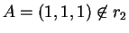,
o ponto A e r2 determinam um plano que contém a r2.
Dois vetores paralelos a este plano são
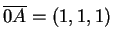e (1,-1,1), e um ponto é a origem, logo
a equação paramétrica de
que não sejam paralelos e contenham a r2.
Como o ponto
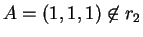,
o ponto A e r2 determinam um plano que contém a r2.
Dois vetores paralelos a este plano são
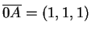e (1,-1,1), e um ponto é a origem, logo
a equação paramétrica de  é
é
Para determinar o plano  escolhemos um ponto B que não pertença a
escolhemos um ponto B que não pertença a  ,
por exemplo, B=(1,0,0).
Observe que se
então
,
por exemplo, B=(1,0,0).
Observe que se
então
Raciocinanco como no caso de  ,
Como
,
o ponto B e r2 determinam um plano que contém a r2.
Dois vetores paralelos a este plano são
,
Como
,
o ponto B e r2 determinam um plano que contém a r2.
Dois vetores paralelos a este plano são
 e (1,-1,1), e um ponto é a origem, logo
a equação paramétrica de
e (1,-1,1), e um ponto é a origem, logo
a equação paramétrica de  é
é
d)
Para calcular a distância entre as retas escolhemos um ponto P=(1,0,0) de
r1, um ponto Q=(0,0,0) de r2 e os vetores
diretores das duas retas, (1,1,1) e (1,-1,1). Sabemos que
a distância d é dada por
e) As retas são reversas: não são paralelas (vetores diretores não paralelos) e a distância é não nula.
4)
Considere os planos
Resposta:
a)
O vetor normal n1 de  é (1,1,-1).
O vetor normal n2 de
é (1,1,-1).
O vetor normal n2 de  é (2,1, 1).
Como estes vetores não são paralelos
(veja que
para todo
ou que
), os planos se
intersectam ao longo de uma reta r.
é (2,1, 1).
Como estes vetores não são paralelos
(veja que
para todo
ou que
), os planos se
intersectam ao longo de uma reta r.
b)
O vetor normal n1 de  é (1,1,-1).
O vetor normal n3 de
é (2,2, -2).
Observe que n2=2 n1. Logo os vetores normais são paralelos
e os planos também. Falta ver se são iguais (mesmo plano)
ou disjuntos. Como o ponto (1,0,0) pertence aos dois
planos, estes são iguais. Observe que a equação de
é obtida multiplicando por 2 a equação de
é (1,1,-1).
O vetor normal n3 de
é (2,2, -2).
Observe que n2=2 n1. Logo os vetores normais são paralelos
e os planos também. Falta ver se são iguais (mesmo plano)
ou disjuntos. Como o ponto (1,0,0) pertence aos dois
planos, estes são iguais. Observe que a equação de
é obtida multiplicando por 2 a equação de  .
.
c)
O vetor normal n1 de  é (1,1,-1).
O vetor normal n2 de
é (1,1,-1).
O vetor normal n2 de  é (2,1, 1).
O vetor normal n4 de
é (1,0,2).
é (2,1, 1).
O vetor normal n4 de
é (1,0,2).
Observe que n1 não é paralelo a n2, que n1 não é paralelo a n4, e que n2 não é paralelo a n4. Logo nenhum plano é paralelo ao outro.
Calculemos
,
Outra forma de resolver a questão é a seguinte:
O determinante cujas linhas são os vetores normais aos planos
é
Por outra parte o determinante obtido susbtituindo a primeira linha
pelos coeficientes sem incógnitas é:
Por outra parte, como já vimos, os planos não são paralelos, logo se intersectam dois a dois em retas paralelas.
d)
O vetor normal n1 de  é (1,1,-1).
O vetor vetor diretor v de r é (1,2,3).
Observe que
.
Logo n1 e v são ortogonais.
Isto significa que r e
é (1,1,-1).
O vetor vetor diretor v de r é (1,2,3).
Observe que
.
Logo n1 e v são ortogonais.
Isto significa que r e  são paralelos.
Como a origem
e não pertence a
são paralelos.
Como a origem
e não pertence a  ,
a
reta e o plano são paralelos e disjuntos.
,
a
reta e o plano são paralelos e disjuntos.